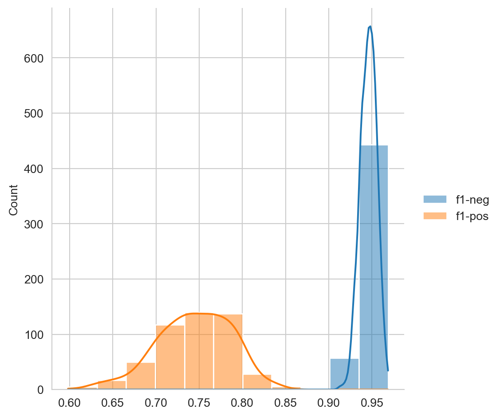
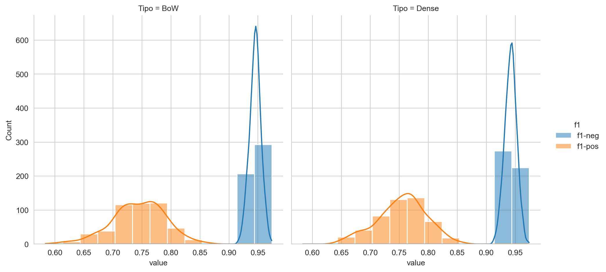

from EvoMSA import BoW, DenseBoW, StackGeneralization
from microtc.utils import tweet_iterator
from IngeoML import CI, SelectFromModelCV
from sklearn.metrics import f1_score,\
recall_score,\
precision_score
from wordcloud import WordCloud
import numpy as np
import pandas as pd
from matplotlib import pylab as plt
import seaborn as sns6 Mezcla de Modelos
El objetivo de la unidad es
Paquetes usados
Video explicando la unidad
6.1 Conjunto de Datos
El conjunto de datos se puede conseguir en la página de Delitos aunque en esta dirección es necesario poblar los textos dado que solamente se encuentra el identificador del Tweet.
Para leer los datos del conjunto de entrenamiento y prueba se utilizan las siguientes instrucciones. En la variable D se tiene los datos que se utilizarán para entrenar el clasificador basado en la bolsa de palabras y en Dtest los datos del conjunto de prueba, que son usados para medir el rendimiento del clasificador.
fname = 'delitos/delitos_ingeotec_Es_train.json'
fname_test = 'delitos/delitos_ingeotec_Es_test.json'
D = list(tweet_iterator(fname))
Dtest = list(tweet_iterator(fname_test))En la siguiente instrucción se observa el primer elemento del conjunto de entrenamiento. Se puede observar que en el campo text se encuentra el texto, el campo klass representa la etiqueta o clase, donde \(0\) representa la clase negativa y \(1\) la clase positiva, es decir, la presencia de un delito. El campo id es el identificador del Tweet y annotations son las clases dadas por los etiquetadores a ese ejemplo.
D[81]{'annotations': [0, 0, 0],
'id': 1107040319986696195,
'klass': 0,
'text': 'To loco'}6.2 Bolsa de Palabras Dispersa
Se inicia con la creación de un clasificador basado en una bolsa de palabras dispersa, el clasificador es una máquina de soporte vectorial lineal (LinearSVC). La siguiente instrucción usa la clase BoW para crear este clasificador de texto. El primer paso es seleccionar el lenguaje, en este caso español (es) y después se entrena usando el método fit.
bow = BoW(lang='es').fit(D)txt = 'me golpearon y robaron la bicicleta en la noche'
bow.predict([txt])array([1])hy_bow = bow.predict(Dtest)y = np.r_[[x['klass'] for x in Dtest]]
f1_score(y, hy_bow, average=None)array([0.94612795, 0.74603175])ci = CI(statistic=lambda y, hy: f1_score(y, hy,
average=None))
ci_izq, ci_der = ci(y, hy_bow)El intervalo izquierdo es \([0.9286, 0.6577]\) y el derecho tiene los valores \([0.9641, 0.8241]\).
Código
df_bow = pd.DataFrame(ci.statistic_samples, columns=['f1-neg', 'f1-pos'])
df_bow['Tipo'] = 'BoW'
sns.set_style('whitegrid')
sns.displot(df_bow, kde=True)
ws = bow.estimator_instance.coef_[0]
idfs = bow.weightstokens_pos = {name: w * idf
for name, idf, w in zip(bow.names,
idfs, ws)
if w > 0}
tokens_neg = {name: w * idf * -1
for name, idf, w in zip(bow.names,
idfs, ws)
if w < 0}Código
word_pos = WordCloud().generate_from_frequencies(tokens_pos)
word_neg = WordCloud().generate_from_frequencies(tokens_neg)
fig, (ax1, ax2) = plt.subplots(1, 2)
for cloud, ax, title in zip([word_pos, word_neg],
[ax1, ax2],
['Positivas', 'Negativas']):
ax.imshow(cloud, interpolation='bilinear')
ax.grid(False)
ax.tick_params(left=False, right=False, labelleft=False,
labelbottom=False, bottom=False)
ax.set_title(title)
6.3 Bolsa de Palabras Densas
dense = DenseBoW(lang='es',
voc_size_exponent=15,
dataset=False)macro_f1 = lambda y, hy: f1_score(y, hy, average='macro')
kwargs = dense.estimator_kwargs
estimator = dense.estimator_class(**kwargs)
kwargs = dict(estimator=estimator,
scoring=macro_f1)
dense.select(D=D,
feature_selection=SelectFromModelCV,
feature_selection_kwargs=kwargs)
dense.fit(D)select = dense.feature_selection
perf = select.cv_results_Código
_ = [{'d': k, 'macro-f1': v} for k, v in perf.items()]
df = pd.DataFrame(_)
ax = sns.lineplot(df, x='d', y='macro-f1')
sns.set_style('whitegrid')
hy_dense = dense.predict(Dtest)f1_score(y, hy_dense, average=None)array([0.94158076, 0.75362319])Código
ci(y, hy_dense)
df_dense = pd.DataFrame(ci.statistic_samples, columns=['f1-neg', 'f1-pos'])
df_dense['Tipo'] = 'Dense'
_ = df_bow.melt(id_vars=['Tipo'], value_name='value', var_name='f1')
_2 = df_dense.melt(id_vars=['Tipo'], value_name='value', var_name='f1')
_ = pd.concat((_, _2))
sns.set_style("whitegrid")
fig = sns.displot(_, x='value', hue='f1', kde=True, col='Tipo')
# plt.grid()
w = dense.estimator_instance.coef_[0]
names = np.array(dense.names)
carac_pos = {k: v for k, v in zip(names, w) if v > 0}
carac_neg = {k: v * -1 for k, v in zip(names, w) if v < 0}Código
word_pos = WordCloud().generate_from_frequencies(carac_pos)
word_neg = WordCloud().generate_from_frequencies(carac_neg)
fig, (ax1, ax2) = plt.subplots(1, 2)
for cloud, ax, title in zip([word_pos, word_neg],
[ax1, ax2],
['Positivas', 'Negativas']):
ax.imshow(cloud, interpolation='bilinear')
ax.grid(False)
ax.tick_params(left=False, right=False, labelleft=False,
labelbottom=False, bottom=False)
ax.set_title(title)
6.4 Análisis Mediante Ejemplos
bow_norm = np.linalg.norm(bow.estimator_instance.coef_[0])
txt = 'Asesinan a persona en Jalisco.'
bow.decision_function([txt]) / bow_normarray([[0.03104444]])dense_norm = np.linalg.norm(dense.estimator_instance.coef_[0])
dense.decision_function([txt]) / dense_normarray([[0.00906055]])txt = 'La asesina vivía en Jalisco.'
bow.decision_function([txt]) / bow_normarray([[-0.03643009]])dense.decision_function([txt]) / dense_normarray([[-0.03598119]])txt = 'Asesinan a persona en Jalisco.'
bow.decision_function([txt]) / bow_normarray([[0.03104444]])w = bow.estimator_instance.coef_[0]
vec = bow.bow[txt]
sorted([(bow.names[k], w[k] * v) for k, v in vec],
key=lambda x: np.fabs(x[1]), reverse=True)[:5][('asesinan', 0.2195941446592123),
('asesinan~a', 0.2082828582426538),
('q:sina', 0.145118160052437),
('q:n~a~', 0.08388026354459165),
('q:an~a', 0.0734438309195836)]dense.decision_function([txt]) / dense_normarray([[0.00906055]])w = dense.estimator_instance.coef_[0]
vec = dense.transform([txt])[0] * w
sorted([(dense.names[k], v) for k, v in enumerate(vec)],
key=lambda x: np.fabs(x[1]), reverse=True)[:5][('ocurrir', 0.06683457750173856),
('muere', 0.053880044741064774),
('consiguio', -0.05168798790090579),
('critican', -0.04459207389659752),
('hubieses', -0.04426955144485894)]Código
def codifica(names, vec):
carac_pos = dict()
for k, v in zip(names, vec):
if v > 0:
key = f'{k.upper()}'
else:
key = k
carac_pos[key] = np.fabs(v)
return carac_pos
txt = 'Asesinan a persona en Jalisco.'
_ = dense.transform([txt])[0] * dense.estimator_instance.coef_[0]
word_cloud_dense = WordCloud().generate_from_frequencies(codifica(dense.names, _))
w = bow.estimator_instance.coef_[0]
vec = bow.bow[txt]
carac_pos = dict()
for k, v in vec:
if w[k] > 0:
key = f'{bow.names[k].upper()}'
else:
key = bow.names[k]
carac_pos[key] = np.fabs(v * w[k])
word_cloud = WordCloud().generate_from_frequencies(carac_pos)
fig, (ax1, ax2) = plt.subplots(1, 2)
ax1.imshow(word_cloud, interpolation='bilinear')
ax2.imshow(word_cloud_dense, interpolation='bilinear')
for ax, title in zip([ax1, ax2], ['BoW', 'DenseBoW']):
ax.grid(False)
ax.tick_params(left=False, right=False, labelleft=False,
labelbottom=False, bottom=False)
ax.set_title(title)
Código
txt = 'La asesina vivía en Jalisco.'
_ = dense.transform([txt])[0] * dense.estimator_instance.coef_[0]
word_cloud_dense = WordCloud().generate_from_frequencies(codifica(dense.names, _))
w = bow.estimator_instance.coef_[0]
vec = bow.bow[txt]
carac_pos = dict()
for k, v in vec:
if w[k] > 0:
key = f'{bow.names[k].upper()}'
else:
key = bow.names[k]
carac_pos[key] = np.fabs(v * w[k])
word_cloud = WordCloud().generate_from_frequencies(carac_pos)
fig, (ax1, ax2) = plt.subplots(1, 2)
ax1.imshow(word_cloud, interpolation='bilinear')
ax2.imshow(word_cloud_dense, interpolation='bilinear')
for ax, title in zip([ax1, ax2], ['BoW', 'DenseBoW']):
ax.grid(False)
ax.tick_params(left=False, right=False, labelleft=False,
labelbottom=False, bottom=False)
ax.set_title(title)
Código
txt = 'Le acaban de robar la bicicleta a mi hijo.'
_ = dense.transform([txt])[0] * dense.estimator_instance.coef_[0]
word_cloud_dense = WordCloud().generate_from_frequencies(codifica(dense.names, _))
w = bow.estimator_instance.coef_[0]
vec = bow.bow[txt]
carac_pos = dict()
for k, v in vec:
if w[k] > 0:
key = f'{bow.names[k].upper()}'
else:
key = bow.names[k]
carac_pos[key] = np.fabs(v * w[k])
word_cloud = WordCloud().generate_from_frequencies(carac_pos)
fig, (ax1, ax2) = plt.subplots(1, 2)
ax1.imshow(word_cloud, interpolation='bilinear')
ax2.imshow(word_cloud_dense, interpolation='bilinear')
for ax, title in zip([ax1, ax2], ['BoW', 'DenseBoW']):
ax.grid(False)
ax.tick_params(left=False, right=False, labelleft=False,
labelbottom=False, bottom=False)
ax.set_title(title)
6.5 Combinando Modelos
stack = StackGeneralization([bow, dense]).fit(D)hy_stack = stack.predict(Dtest)f1_score(y, hy_stack, average=None)array([0.94791667, 0.79166667])| Recall neg | Recall pos | Precision neg | Precision pos | |
|---|---|---|---|---|
bow |
\(0.9894\) | \(0.6184\) | \(0.9065\) | \(0.9400\) |
dense |
\(0.9648\) | \(0.6842\) | \(0.9195\) | \(0.8387\) |
stack |
\(0.9613\) | \(0.7500\) | \(0.9349\) | \(0.8382\) |